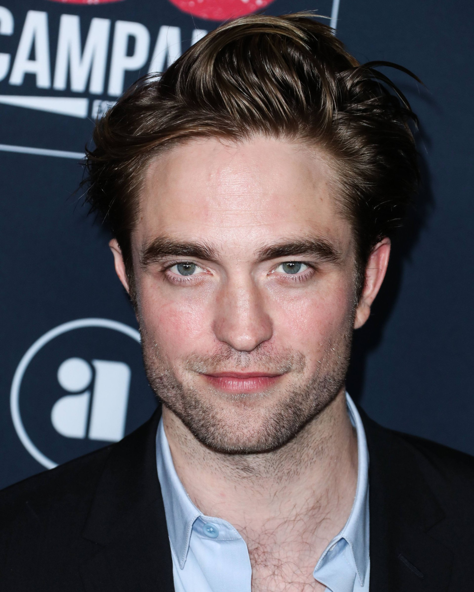
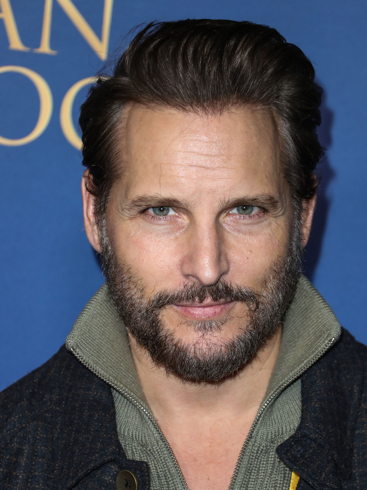
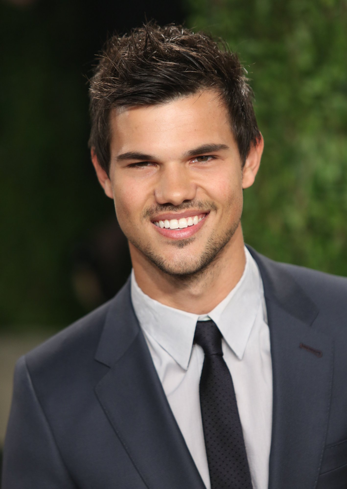
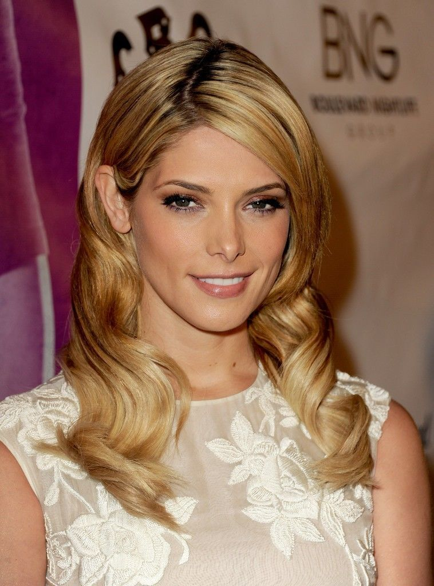
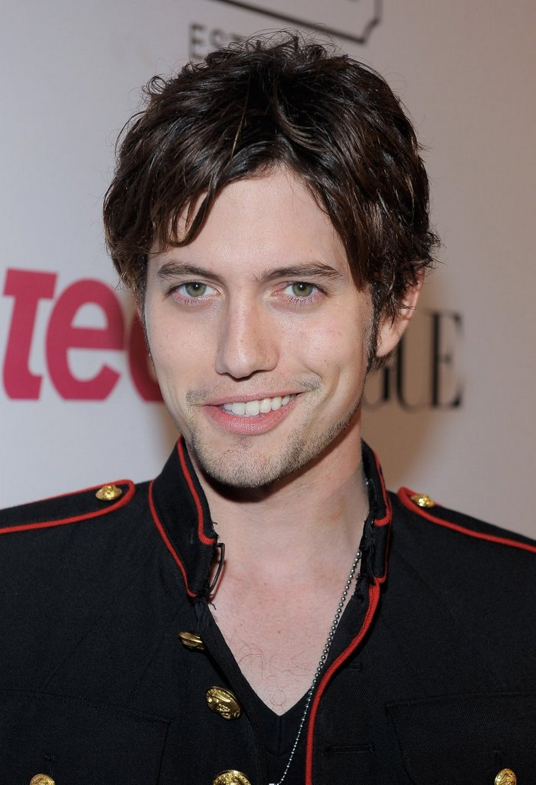
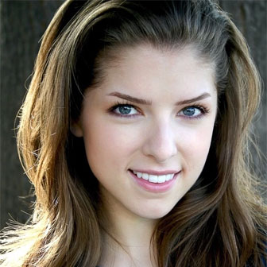
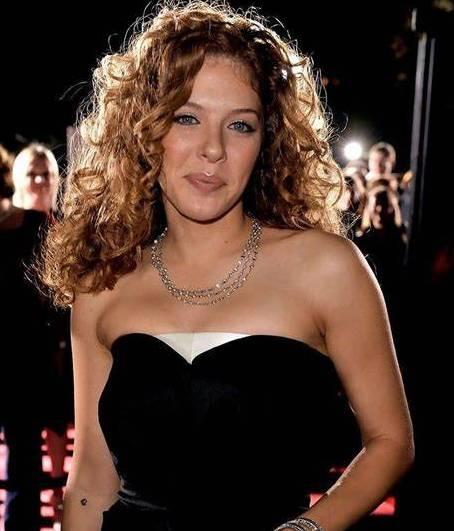
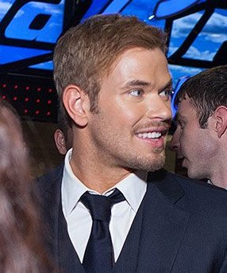

Кристен Стюарт — американская актриса, родившаяся 9 апреля 1990
года в Лос-Анджелесе. Свою актёрскую карьеру она начала в возрасте
9 лет. Первую известность ей принесла роль в психологическом
триллере «Западня» (2002). Мировой прорыв произошёл в 2008 году с
ролью Беллы Свон в «Сумерках». Фильм стал культурным феноменом, а
Стюарт — одной из самых узнаваемых актрис. Она снялась во всех
пяти фильмах саги, собравшей более 3,3 миллиардов долларов. В 2015
году стала первой американской актрисой, получившей французскую
премию «Сезар».

Эдвард Каллен
Роберт Паттинсон — британский актёр и музыкант, родившийся 13 мая
1986 года в Лондоне. Мировая известность пришла к нему после роли
вампира Эдварда Каллена в «Сумерках». Эта роль сделала его одним
из самых высокооплачиваемых актёров Голливуда. После саги
Паттинсон кардинально сменил амплуа на независимое кино. Он снялся
в фильмах «Проклятие», «Хорошее время» и «Антенна». В 2022 году
получил всеобщее признание за роль Брюса Уэйна / Бэтмена.
Паттинсон также известен как музыкант, играющий на гитаре и
пианино.

Карлайл Каллен
Питер Фачинелли — американский актёр итальянского происхождения.
Он родился 26 ноября 1973 года в Квинсе, Нью-Йорк. Наиболее
известен по роли доктора Карлайла Каллена в «Сумерках». До этого
снимался в сериалах «Скорая помощь» и «Бульвар Воскресенье». После
успеха франшизы продолжил карьеру в телесериалах. Он играл в
«Медсестре Джеки» и «Супергёрл». Фачинелли также пробовал себя в
качестве продюсера и режиссёра.

Джейкоб Блэк
Тейлор Лотнер — американский актёр, родившийся 11 февраля 1992
года. Прославился ролью оборотня Джейкоба Блэка в саге «Сумерки».
Начал сниматься в кино с 12 лет в фильме «Приключения Шаркбоя и
Лавы». Его карьера взлетела после выхода первой части «Сумерек».
Лотнер стал символом подростковой аудитории 2000-х годов. После
франшизы снимался в боевиках и комедиях. Также известен как модель
и спортсмен, занимающийся боевыми искусствами.
Чарли Свон
Билли Бёрк — американский актёр, родившийся 25 ноября 1966 года.
Исполнил роль Чарли Свона, отца Беллы, в «Сумерках». Известен
своей карьерой в театре, кино и на телевидении. До «Сумерек»
снимался в сериалах «24 часа» и «C.S.I.: Место преступления».
После франшизы продолжил успешную карьеру в Голливуде. Играл в
фильмах «Разрушение» и «Свет в океане». Также известен как
талантливый театральный актёр.

Элис Каллен
Эшли Грин — американская актриса и модель, родившаяся 21 февраля
1987 года. Получила известность благодаря роли Элис Каллен в
«Сумерках». Элис — вампир с даром предвидения, сестра Эдварда.
Грин снялась во всех пяти фильмах франшизы. До этого она работала
моделью в Нью-Йорке и Лос-Анджелесе. После «Сумерек» снималась в
независимом кино и сериалах. Также занимается дизайном ювелирных
украшений.

Джаспер Хейл
Джексон Рэтбоун — американский актёр и музыкант, родившийся 21
декабря 1984 года. Известен по роли Джаспера Хейла, вампира из
семьи Калленов. Джаспер — бывший солдат Конфедерации, обладающий
даром управления эмоциями. Рэтбоун начал карьеру с небольших ролей
в сериалах. Параллельно с актёрской карьерой занимается музыкой.
Играет на гитаре и пианино, выступает со своей группой. После
«Сумерек» снимался в независимых фильмах.

Джессика Стэнли
Анна Кендрик — американская актриса и певица, родившаяся 9 августа
1985 года. Исполнила роль Джессики Стэнли, подруги Беллы, в
«Сумерках». Начала карьеру в бродвейских мюзиклах с детства. Была
номинирована на «Тони» в возрасте 12 лет. После «Сумерек» добилась
огромного успеха в Голливуде. Снялась в фильмах «Мальчишник в
Вегасе» и «Вверх в воздух». Получила номинацию на «Оскар» за роль
в «Вверх в воздух».

Виктория
Рашель Лефевр — канадская актриса, родившаяся 1 февраля 1979 года.
Известна по роли Виктории, вампирши, мстящей за своего партнёра.
Виктория — главный антагонист в первых двух фильмах «Сумерок».
Лефевр начинала карьеру в канадском телевидении. Снималась в
сериалах «Боги реки» и «Предел». После «Сумерек» продолжила
карьеру в телевизионных проектах. Также известна как активистка
защиты окружающей среды.

Эммет Каллен
Келлан Лутц — американский актёр и модель, родившийся 15 марта
1985 года. Исполнил роль Эммета Каллена, самого физически сильного
вампира в семье. Эммет — муж Розали Хейл, отличается добродушным и
весёлым характером. До «Сумерек» Лутц снимался в сериалах «C.S.I.:
Майами» и «90210». Также работал моделью для таких брендов как
Abercrombie & Fitch. После франшизы снимался в фильмах «Геракл» и
«Ведьмак». Известен своей спортивной формой и увлечением боевыми
искусствами.
АКТЕРЫ
Белла Свон
Кристен Стюарт — американская актриса, родившаяся 9 апреля 1990 года в Лос-Анджелесе. Свою актёрскую карьеру она начала в возрасте 9 лет. Первую известность ей принесла роль в психологическом триллере «Западня» (2002). Мировой прорыв произошёл в 2008 году с ролью Беллы Свон в «Сумерках». Фильм стал культурным феноменом, а Стюарт — одной из самых узнаваемых актрис. Она снялась во всех пяти фильмах саги, собравшей более 3,3 миллиардов долларов. В 2015 году стала первой американской актрисой, получившей французскую премию «Сезар».
Эдвард Каллен
Роберт Паттинсон — британский актёр и музыкант, родившийся 13 мая 1986 года в Лондоне. Мировая известность пришла к нему после роли вампира Эдварда Каллена в «Сумерках». Эта роль сделала его одним из самых высокооплачиваемых актёров Голливуда. После саги Паттинсон кардинально сменил амплуа на независимое кино. Он снялся в фильмах «Проклятие», «Хорошее время» и «Антенна». В 2022 году получил всеобщее признание за роль Брюса Уэйна / Бэтмена. Паттинсон также известен как музыкант, играющий на гитаре и пианино.
Карлайл Каллен
Питер Фачинелли — американский актёр итальянского происхождения. Он родился 26 ноября 1973 года в Квинсе, Нью-Йорк. Наиболее известен по роли доктора Карлайла Каллена в «Сумерках». До этого снимался в сериалах «Скорая помощь» и «Бульвар Воскресенье». После успеха франшизы продолжил карьеру в телесериалах. Он играл в «Медсестре Джеки» и «Супергёрл». Фачинелли также пробовал себя в качестве продюсера и режиссёра.
Джейкоб Блэк
Тейлор Лотнер — американский актёр, родившийся 11 февраля 1992 года. Прославился ролью оборотня Джейкоба Блэка в саге «Сумерки». Начал сниматься в кино с 12 лет в фильме «Приключения Шаркбоя и Лавы». Его карьера взлетела после выхода первой части «Сумерек». Лотнер стал символом подростковой аудитории 2000-х годов. После франшизы снимался в боевиках и комедиях. Также известен как модель и спортсмен, занимающийся боевыми искусствами.
Чарли Свон
Билли Бёрк — американский актёр, родившийся 25 ноября 1966 года. Исполнил роль Чарли Свона, отца Беллы, в «Сумерках». Известен своей карьерой в театре, кино и на телевидении. До «Сумерек» снимался в сериалах «24 часа» и «C.S.I.: Место преступления». После франшизы продолжил успешную карьеру в Голливуде. Играл в фильмах «Разрушение» и «Свет в океане». Также известен как талантливый театральный актёр.
Элис Каллен
Эшли Грин — американская актриса и модель, родившаяся 21 февраля 1987 года. Получила известность благодаря роли Элис Каллен в «Сумерках». Элис — вампир с даром предвидения, сестра Эдварда. Грин снялась во всех пяти фильмах франшизы. До этого она работала моделью в Нью-Йорке и Лос-Анджелесе. После «Сумерек» снималась в независимом кино и сериалах. Также занимается дизайном ювелирных украшений.
Джаспер Хейл
Джексон Рэтбоун — американский актёр и музыкант, родившийся 21 декабря 1984 года. Известен по роли Джаспера Хейла, вампира из семьи Калленов. Джаспер — бывший солдат Конфедерации, обладающий даром управления эмоциями. Рэтбоун начал карьеру с небольших ролей в сериалах. Параллельно с актёрской карьерой занимается музыкой. Играет на гитаре и пианино, выступает со своей группой. После «Сумерек» снимался в независимых фильмах.
Джессика Стэнли
Анна Кендрик — американская актриса и певица, родившаяся 9 августа 1985 года. Исполнила роль Джессики Стэнли, подруги Беллы, в «Сумерках». Начала карьеру в бродвейских мюзиклах с детства. Была номинирована на «Тони» в возрасте 12 лет. После «Сумерек» добилась огромного успеха в Голливуде. Снялась в фильмах «Мальчишник в Вегасе» и «Вверх в воздух». Получила номинацию на «Оскар» за роль в «Вверх в воздух».
Виктория
Рашель Лефевр — канадская актриса, родившаяся 1 февраля 1979 года. Известна по роли Виктории, вампирши, мстящей за своего партнёра. Виктория — главный антагонист в первых двух фильмах «Сумерок». Лефевр начинала карьеру в канадском телевидении. Снималась в сериалах «Боги реки» и «Предел». После «Сумерек» продолжила карьеру в телевизионных проектах. Также известна как активистка защиты окружающей среды.
Эммет Каллен
Келлан Лутц — американский актёр и модель, родившийся 15 марта 1985 года. Исполнил роль Эммета Каллена, самого физически сильного вампира в семье. Эммет — муж Розали Хейл, отличается добродушным и весёлым характером. До «Сумерек» Лутц снимался в сериалах «C.S.I.: Майами» и «90210». Также работал моделью для таких брендов как Abercrombie & Fitch. После франшизы снимался в фильмах «Геракл» и «Ведьмак». Известен своей спортивной формой и увлечением боевыми искусствами.